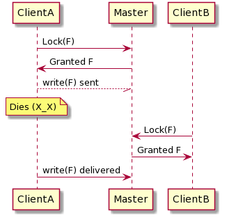

Summary of The Chubby lock service for loosely-coupled distributed systems¶
Chubby is a distributed lock service which is focused on providing course-grained locking (locks held over hours & days vs seconds). Chubby emphasises simple semantics and ease of programming over storage capacity and throughput. Chubby is used in projects such as GFS and Bigtable, and is often employed as a name service. Chubby has been proven to be scalable to tens of thousands of client processes using the same Chubby instance (which itself usually features 5 servers).
Another perk of Chubby is that clients interface with it using a file-system like API. Using Open() to create a Chubby handle (aquire a lock) and Close() to destroy the handle (releasing the lock). Then either a single client can access it in write-mode, or any number of clients can access in read mode. I particularly like the idea of using a locking system such as Chubby for leader election. Simply allow the server which first aqires the lock to be the leader. However it does come with the downside of reqiring an external service, as apposed to Raft leader election which is completed within a cluster.
Here are some questions I was left with after reading through the paper:
What happens when a lock is aquired and never released? (call to Open() without a call to Close()) are we just assuming that the clients won’t make this mistake? or that there aren’t any bad actors?
What if a process aquires a lock and then dies?
Is familiarity (using a unix-filesystem like API) really a good thing here? clearly it’s nice to work with as any developer will be familiar with the unix (or a similar file system), but isn’t it a bit misleading?
In the paper, the authors complained about developers using their system wrongly, stating that “few consider the effects of independent machine failures on locks in a system with asyncronous communications”. Doesn’t having an interface so similar to a local file-system encourage this?
- Lack of manditory locks?
Often the reason for using a lock is to prevent concurrent access to a file. The reason for preventing that access is to prevent undefined behaviour arising from reads & writes occuring in a non-deterministic order. Chubby employs only advisory locks, meaning that the developer has the ability to read the file without aquiring the lock. They state in the paper that a reason for doing this is to ease debugging, but i’m failing to see how allowing a file to be accessed without aquiring a lock is a good idea? Also, realisically, providing developers with the ability to do this (even for testing & debugging purposes) means that they will do it and that they will sometimes forget that they did. Well, until something horrible happens.
If you refer to the usage plot provided on page 11 of the paper you will notice that there are 1000 exlusive locks given, but 12, 000 open files
The had a look at these other sources as well:
https://blog.acolyer.org/2015/02/13/the-chubby-lock-service-for-loosely-coupled-distributed-systems/
https://docs.oracle.com/cd/E19253-01/816-5137/guide-5/index.html
http://pages.cs.wisc.edu/~swift/classes/cs739-sp12/blog/2012/02/the_chubby_lock_service_for_lo.html
https://www2.cs.uic.edu/~brents/cs494-cdcs/slides/thegooglechubbylockservice.pdf
Source [1] explains that the case of a dead process is handled using a lock-delay and sequencer checking. A lock-delay is the time period between a client dieing and a lock becoming available. The client library sends keep-alive messages to the Chubby master, so a failure at the client will be detected via a timeout. Adding a sufficent lock-delay prevents a client failure from resulting in an inconsistant state.
consider this scenario where no lock delay is provided:
By adding a lock-delay (and thus denying ClientB from getting the lock) we prevent the inconsistant state imposed by the late delivery of ClientB’s write, as ClientB would still hold the lock (dispite being dead)
There was also mention of sequencer checks, however I was unable to find a satisfactory explaination of how they are used in the case of process failiure. I was also unable to find any action taken by Chubby to deal with bad actors which could hold a lock indefinitley, whether on purpose (malicous) or by accident (developer error, failed to call Close()). I also cannot see how this type of situation would be detected by the Chubby Master.
The oversight of this, as well as my other two questions, are addressed by the fact that Chubby was designed for internal use at Google. Because of this it simply assumes that there aren’t bad actors in the system.
┌─┐ ┌─┐ ║"│ ║"│ └┬┘ └┬┘ ┌┼┐ ┌┼┐ │ ┌──────┐ │ ┌┴┐ │Master│ ┌┴┐ BadGuy └──────┘ OkDude │ Lock(F) │ │ │ ────────────────> │ │ │ │ │ Aquired(F) │ │ │ <──────────────── │ │ │ │ │ KeepAlive(F) │ │ │ ────────────────> │ │ │ │ │ KeepAlive(F) │ │ │ ────────────────> │ │ │ │ │ KeepAlive(F) │ │ │ ────────────────> │ │ │ │ │ │ │ │ some time later │ │ │ │ │ │ │ . . . . KeepAlive(F) . . . ────────────────> . . . . . . Lock(F) . │ │ <──────────────── │ │ │ │ │ Denied(F) │ │ │ ────────────────> │ │ │ │ KeepAlive(F) │ │ │ ────────────────> │ │ │ │ │ │ │ │ some time later │ │ │ │ │ │ │ BadGuy ┌──────┐ OkDude ┌─┐ │Master│ ┌─┐ ║"│ └──────┘ ║"│ └┬┘ └┬┘ ┌┼┐ ┌┼┐ │ │ ┌┴┐ ┌┴┐